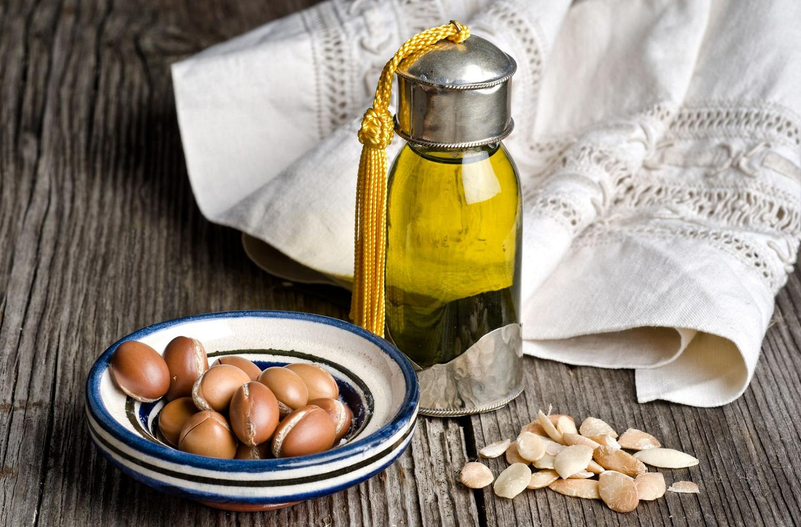
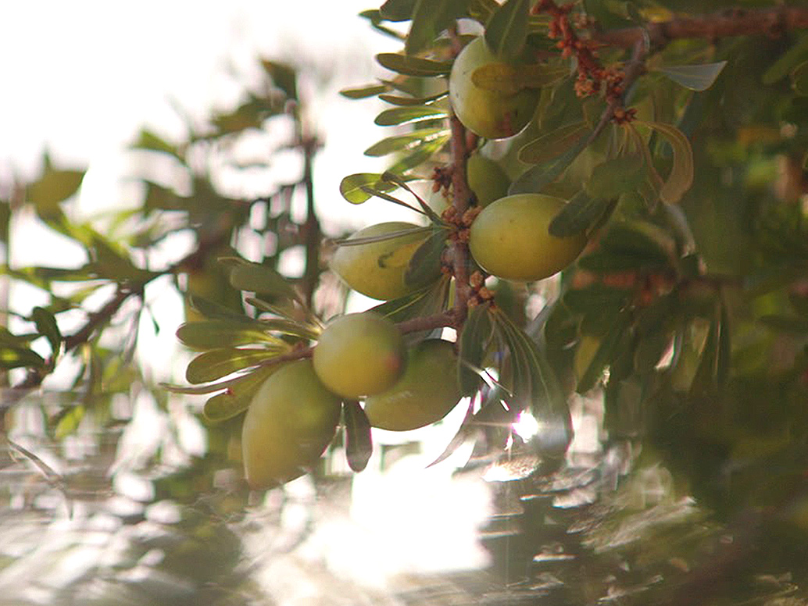

Oil Benefits
Argan trees grow and tenaciously survive in semi-desert areas of the Mediterranean.
The deep roots and small leaves of the argan tree allow it to resist arid winds and water loss,
resulting in a nut with a unique oil profile.
Pure argan oil is a rare and precious oil that is harvested and extracted from the nut of the argan tree.
For centuries, women across the Mediterranean have used argan oil in their beauty regimen for vibrant,
healthy-looking skin and hair.

Oil Benefits
moroccanoil was inspired by the transformative power of argan oil. rich in vitamins, minerals and antioxidants,
this age-old beauty secret has many uses, helping to hydrate and soften your hair, face, body and nails.
with its high content of antioxidants, essential acids and vitamin e, the benefits of argan oil naturally help
revitalize skin, increase hair’s elasticity and consistently restore shine to dull, lifeless hair. it is a powerful
antioxidant, uv-protector and free-radical neutralizer.argan oil for hair leaves it beautiful, shiny and nourished with each use.
argan oil for skin luxuriously hydrates and infuses it with moisture. argan oil has also been known to help reduce the appearance of wrinkles .
